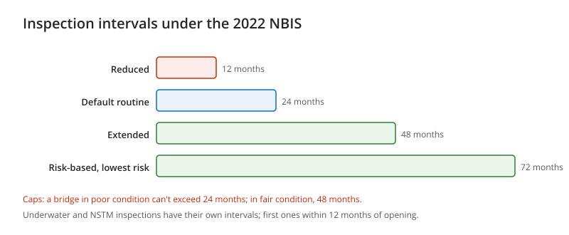

The National Bridge Inspection Standards
In one sentence: every highway bridge over 20 feet on a public road in the U.S. is inspected under the National Bridge Inspection Standards (23 CFR 650, Subpart C), updated in 2022, which set intervals, qualifications and reporting.

What the NBIS cover
- Which bridges: structures carrying public roads with a length over 20 feet, including culverts that size.
- Who is responsible: each state DOT (Caltrans in California), federal agencies and tribal governments for their bridges, through a bridge inspection organization with a qualified program manager.
- Who inspects: each inspection team is led by a qualified team leader, a nationally certified bridge inspector who meets the NBIS experience and training requirements. See Who may inspect and test: qualifications.
Intervals (2022 rule)
- Routine: at least every 24 months by default.
- Reduced, 12 months or less: for bridges with low ratings or other risk factors, as the rule and the owner's policy set.
- Extended, up to 48 months: for bridges in good condition meeting set criteria, or by a documented risk-based method.
- Risk-based method: a formal assessment can place bridges in categories of 12, 24, 48 or 72 months, but bridges in poor condition can't exceed 24 months, and in fair condition can't exceed 48.
- Underwater and NSTM inspections have their own intervals; the first ones are due within 12 months of opening.
- A tolerance of a few months beyond the due date is allowed, depending on the interval.
Other requirements
- Load rating of each bridge and posting of load limits when needed.
- Procedures for scour-critical bridges, NSTMs and complex bridges.
- Quality control and quality assurance of inspections.
- Reporting to the National Bridge Inventory, now under the SNBI data specifications. See Condition ratings: NBI 0 to 9 and element condition states.
For consultants
Inspection work for an agency follows that agency's manual on top of the NBIS. Read it before the kickoff meeting.
Common mistakes
- Letting an inspection slip past the tolerance window.
- A team leader who doesn't meet the current qualification rules.
- Changing a rating without updating the inspection interval it controls.